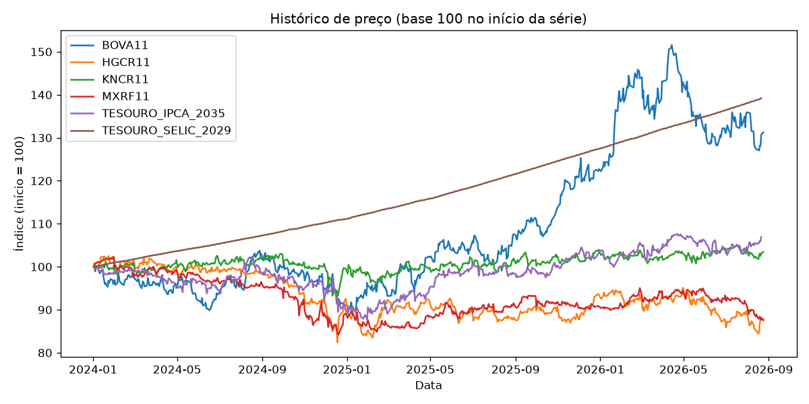
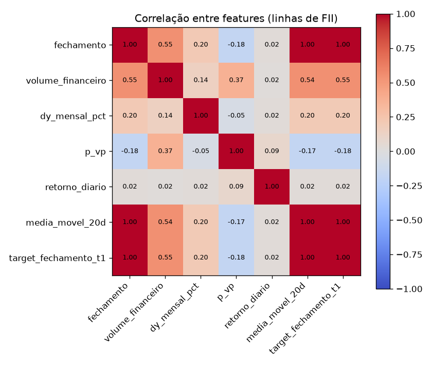
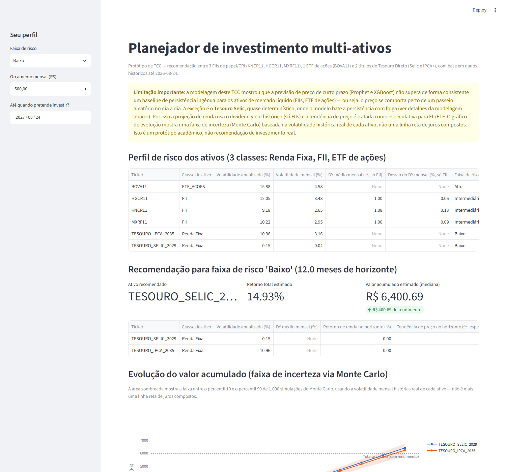
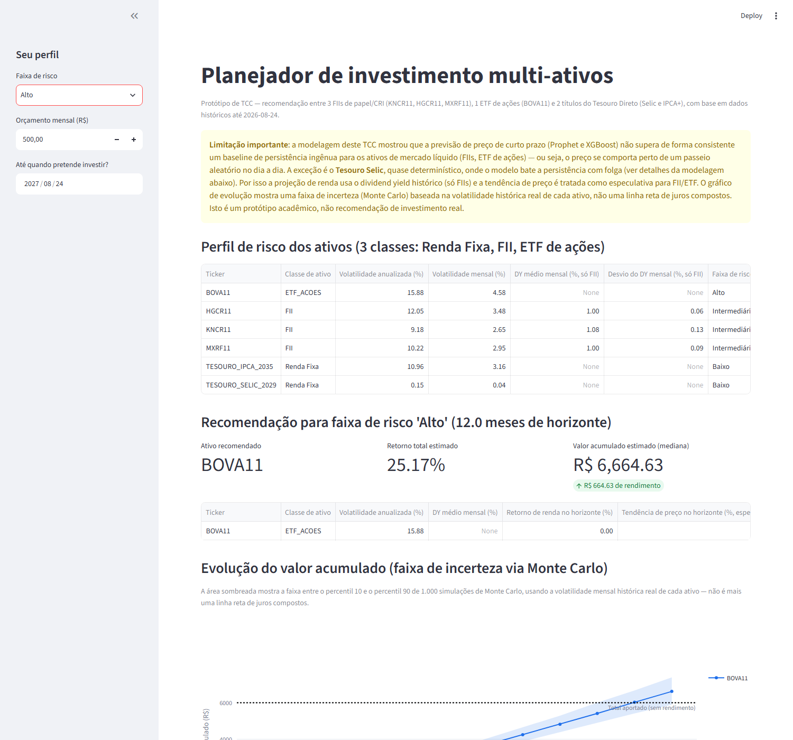

Protótipo: modelagem preditiva (Prophet + XGBoost) e app de planejamento de investimento para 3 FIIs de papel/CRI, 1 ETF de ações (BOVA11) e 2 títulos do Tesouro Direto.
Investigar se é possível prever, com dados públicos e gratuitos, o preço de curto prazo de ativos financeiros brasileiros de diferentes classes de risco, comparando um baseline de série temporal (Prophet) com um modelo de aprendizado de máquina (XGBoost) usando features engenheiradas. O projeto começou só com 3 Fundos de Investimento Imobiliário do segmento papel/recebíveis — KNCR11, HGCR11 e MXRF11 — e foi ampliado para incluir um ETF de ações (BOVA11, Ibovespa) e dois títulos do Tesouro Direto (Selic e IPCA+), dando 3 classes de risco genuinamente diferentes em vez de 3 fundos do mesmo segmento. A partir dessa análise, o protótipo evoluiu para um app de planejamento de investimento que recomenda alocação entre os ativos conforme o perfil de risco, orçamento mensal e horizonte de investimento do usuário.
coleta_dados.py — baixa e faz o parsing do COTAHIST (FIIs + ETF), do Informe Mensal CVM e do histórico do Tesouro Direto.eda.py — junta as 3 fontes em um único dataset longo (uma linha por ativo/dia), cria as features (lags, médias móveis defasadas, retorno diário, P/VP e DY% só para FII, taxa só para Tesouro) e os alvos de previsão.modelagem.py — treina e compara, por ativo, quatro abordagens de previsão, com o conjunto de features ajustado por classe de ativo.recomendacao.py + app_streamlit.py / site_prototipo.html — lógica de recomendação (com 3 faixas de risco reais) e duas interfaces: app Streamlit e versão standalone em HTML puro.Erro medido no conjunto de teste (últimos 20% dos dias de cada ativo, split temporal, sem embaralhar). MAE e RMSE em R$ (ou pontos de PU para o Tesouro); MAE de retorno em pontos percentuais; acurácia direcional = % de vezes que o modelo acertou se o ativo subiria ou cairia. Linhas destacadas = casos em que o XGBoost (retorno) supera a persistência.
| Ativo | Classe | Modelo | RMSE | MAE | MAPE | MAE retorno (p.p.) | Acurácia direcional |
|---|---|---|---|---|---|---|---|
| BOVA11 | ETF ações | Persistência (ingênuo) | 2,138 | 1,619 | 0,92% | 0,917 | 0,8% |
| BOVA11 | ETF ações | Prophet | 53,914 | 46,855 | 27,29% | 27,271 | 45,0% |
| BOVA11 | ETF ações | XGBoost (preço) | 4,898 | 4,109 | 2,34% | 2,332 | 46,5% |
| BOVA11 | ETF ações | XGBoost (retorno) | 3,004 | 2,514 | 1,44% | 1,435 | 41,1% |
| HGCR11 | FII | Persistência (ingênuo) | 0,805 | 0,600 | 0,63% | 0,632 | 2,3% |
| HGCR11 | FII | Prophet | 16,385 | 15,038 | 16,07% | 16,055 | 48,8% |
| HGCR11 | FII | XGBoost (preço) | 0,808 | 0,634 | 0,67% | 0,670 | 52,7% |
| HGCR11 | FII | XGBoost (retorno) | 0,774 | 0,614 | 0,65% | 0,648 | 52,7% |
| KNCR11 | FII | Persistência (ingênuo) | 0,571 | 0,427 | 0,40% | 0,401 | 1,6% |
| KNCR11 | FII | Prophet | 4,179 | 3,789 | 3,56% | 3,560 | 58,1% |
| KNCR11 | FII | XGBoost (preço) | 0,769 | 0,617 | 0,58% | 0,578 | 53,5% |
| KNCR11 | FII | XGBoost (retorno) | 0,591 | 0,480 | 0,45% | 0,451 | 53,5% |
| MXRF11 | FII | Persistência (ingênuo) | 0,063 | 0,046 | 0,47% | 0,467 | 10,1% |
| MXRF11 | FII | Prophet | 0,499 | 0,375 | 3,91% | 3,905 | 38,0% |
| MXRF11 | FII | XGBoost (preço) | 0,105 | 0,088 | 0,90% | 0,899 | 46,5% |
| MXRF11 | FII | XGBoost (retorno) | 0,068 | 0,049 | 0,50% | 0,499 | 51,9% |
| TESOURO_IPCA_2035 | Renda Fixa | Persistência (ingênuo) | 15,696 | 11,923 | 0,50% | 0,499 | 0,0% |
| TESOURO_IPCA_2035 | Renda Fixa | Prophet | 268,439 | 229,206 | 9,57% | 9,567 | 49,2% |
| TESOURO_IPCA_2035 | Renda Fixa | XGBoost (preço) | 52,427 | 43,522 | 1,80% | 1,801 | 55,5% |
| TESOURO_IPCA_2035 | Renda Fixa | XGBoost (retorno) | 20,673 | 16,804 | 0,70% | 0,702 | 59,4% |
| TESOURO_SELIC_2029 | Renda Fixa | Persistência (ingênuo) | 10,371 | 10,364 | 0,05% | 0,055 | 0,0% |
| TESOURO_SELIC_2029 | Renda Fixa | Prophet | 31,510 | 25,583 | 0,13% | 0,133 | 41,4% |
| TESOURO_SELIC_2029 | Renda Fixa | XGBoost (preço) | 779,211 | 679,874 | 3,53% | 4,028 | 0,0% |
| TESOURO_SELIC_2029 | Renda Fixa | XGBoost (retorno) | 0,458 | 0,284 | 0,00% | 0,0015 | 100,0% |


O usuário escolhe uma faixa de risco (Baixo = Renda Fixa, Intermediário = FII, Alto = ETF de ações —
agora baseada em classes de ativo genuinamente diferentes, não mais um ranking relativo dentro de um
único segmento), um orçamento mensal e uma data-horizonte de investimento. O app projeta o retorno
acumulado esperado (dividend yield histórico composto, só para FII, + tendência de preço, rotulada
como especulativa para FII/ETF) e mostra a evolução do valor acumulado com uma
faixa de incerteza via simulação de Monte Carlo (percentis 10-90, usando a
volatilidade mensal histórica real de cada ativo) — resolve o problema da versão anterior, cujo
gráfico era uma linha reta de juros compostos que não refletia a variação real do mercado. Existem
duas versões, com a mesma lógica: app_streamlit.py (interativo, precisa do Python) e
site_prototipo.html (standalone, abre direto no navegador sem servidor — útil para
anexar como evidência e demonstrar na banca).


Para rodar localmente: .\venv\Scripts\python.exe -m streamlit run app_streamlit.py, ou abrir site_prototipo.html direto no navegador.